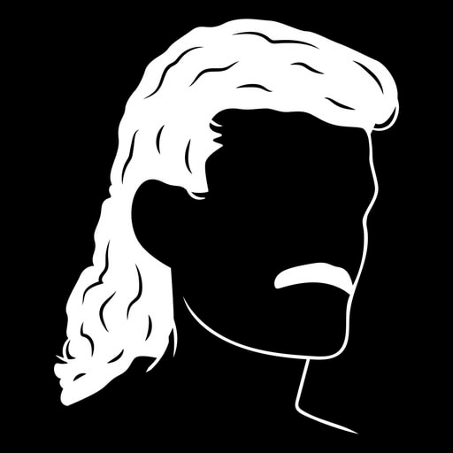

"Not all heroes wear capes; some of them wear terribly dated hockey haircuts."
Silver Mullet represents our third attempt at making our own, in-house automod bot. This bot is meant to be a lean, easy-to-develop, simplest-thing-that-works solution for automatic moderation, which simply patches in some of the gaps that cannot be fulfilled by either Zeppelin, Beemo or Discord's integrated automod. It is not supposed to be a solution to all of our problems at all times; it simply aims to solve some very specific problems in very specific ways, and do well in serving those narrow use cases.
In other words: This is not a silver bullet, it's a silver mullet.
To achieve this goal, this bot is built with simple, ubiquitous, industry-standard, stable* technology (and development should strive to keep things that way). These technologies were not chosen on the basis of achieving the highest performing, most elegant, technically novel, developer-ergonomic or architecturally impressive solution. They were simply chosen by principle of least astonishment, with attention paid to the other factors listed above only after the technology had passed this first litmus test. The idea behind this is to ensure the system has a low barrier to entry for continued development, thereby extending its potential lifespan.
With that in mind, Silver Mullet is backed by the following technologies:
* = well, as stable as it can be, considering Discord and discord.js are involved...
⛔️ Classified information ahead ⛔️
Silver Mullet represents the most sophisticated anti-spam system ever deployed to TCD, and is on the cutting edge of technology even by general moderation bot standards. Like any anti-spam system, its effectiveness in no small part hinges on its configuration parameters and details of its technical execution being kept away from public eye.
Even with regard to the general confidentiality level of TCD staff operations, this bears stating separately: The following sections are highly classified information. IT IS STRICTLY FORBIDDEN TO DISCLOSE ANY PARAMETERS, DETECTION ALGORITHMS, OR ANY OTHER TECHNICAL DETAILS OF ANY SORT ABOUT THIS SYSTEM OUTSIDE OF THE STAFF TEAM.
The easiest way to ensure you do not disclose too much is to simply refuse to answer any questions about this system to the public, other than stating that it's our in-house anti-spam system (and nothing more).
Silver Mullet's highlight features are largely inherited from its forebear, https://github.com/TheCodingDen/mini-slash, but it does have some ideas of its own as well, with the intent of adding more as time goes on. These will be detailed below.
Silver Mullet's flagship feature is Cross-Channel Anti-Spam (CCAS), which uses Nilsimsa hashing to first and foremost enable fuzzy comparison of messages based on broad-strokes similarity, not just absolute equality. This is in an effort to dodge typical antispam countermeasures sometimes deployed by Discord spam malware, like random string addendums.
However, its primary objective is to, by generating this hash for each message sent within the last ~5 minutes and looking through all hashes for a given user each time they send a message, enable the system to automatically detect and shut down spam being spread across multiple channels - something that is usually proliferated by humans, and something most general-purpose automod systems are generally speaking powerless to defeat.
To further empower the system's detection capabilities, the bot supports configuring keywords that, when present in a message, give it additional detection weight in order to trip CCAS detection sooner. This enables shutdown of misconduct that is difficult or outright impossible to accurately filter with simple contextless regex matching, such as phishing link spam, in as little as 2 messages.
Silver Mullet supports adding simple regex filters with slash commands, enabling speedy deployment of filters even from mobile clients, thus permitting rapid response to emerging spam incidents. In contrast to general-purpose systems like Zeppelin, filters can be added on the fly taking whatever action is required. Filters can mute (through the timeout feature), kick, ban, or queue up a kick/ban for moderator approval.
In addition to the typical "send message and filter" style, we also listen for automod events from Discord, and put the blocked content through the filter set. This was we get all the power and simplicity of regular filters, with the otherwise unachievable feature of blocking content before it reaches clients.
Silver Mullet has the ability to track and take action on members that have 'suspiciously reactivated' their accounts. More accurately, each regex filter (above) can have an optional 'days since last activity' field added, which will make the filter only trip if the account has been inactive for more than the threshold. This is calculated by tracking when each member last sent a message (or, in the case that no entry exists, their join date).
The target for this system is attacks that follow no discernible pattern (for example, the '4-image Mr Beast' scam), and are thus extremely difficult to catch with our normal filters. CCAS is able to detect these but a primary motivator for this solution is to have more layers of defence, and to reduce the TTB (time to ban). By reducing the amount of messages sent into the server, we can can reduce unnecessary Hammer pings.
Since this is a bolt-on to filters, this feature can take advantage of the fully customisable nature of filters, described above.
To get started, here's a crash course:
# Install correct Node version
nvm use
# Install dependencies
npm i
# Configure bot settings. Ask infra for a sensible default configuration, including auth to the preset dev bot that's present in the development guild
cp .env.example .env
# Bootstrap dev environment
# Before starting, if you want to have infra admin powers with the bot, edit init-local-dev-db.sql (don't commit changes)
npm run bootstrap
# Start and get coding
npm run dev
# Once booted, run /ccas-config init to setup the CCAS system
To run the unit tests, run npm t -- npm run test:base.
Generated using TypeDoc